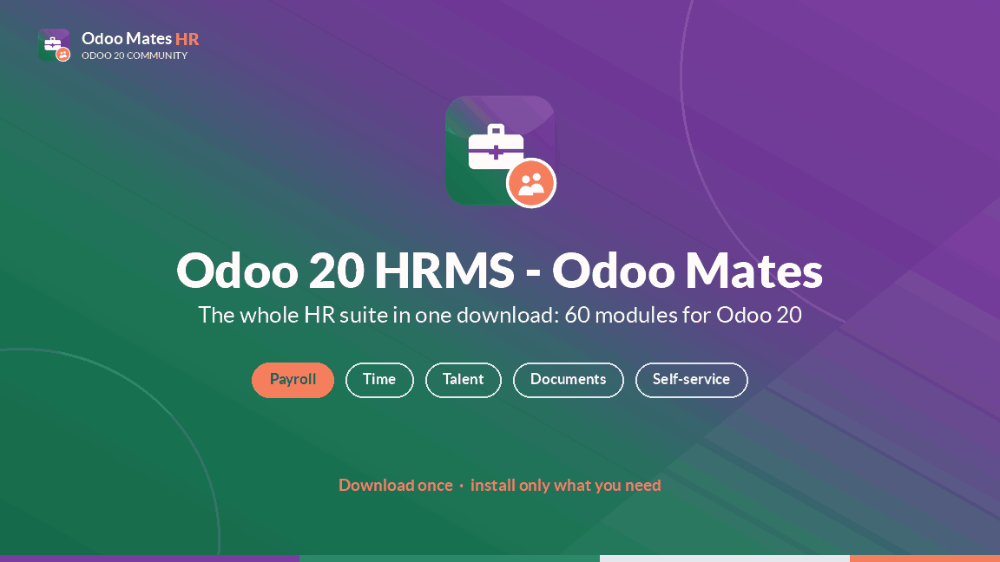
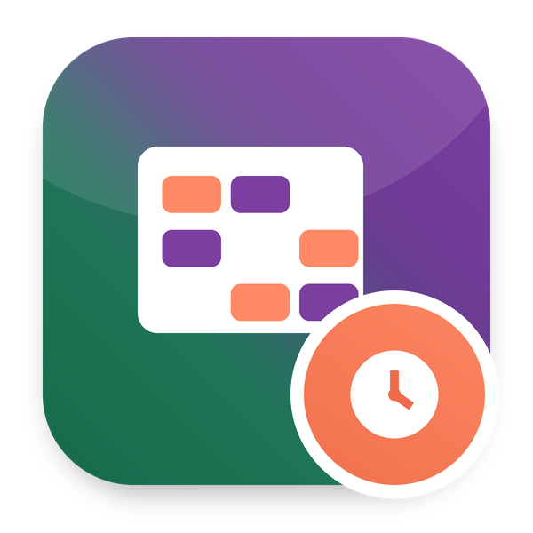

Odoo 20 HRMS - Odoo Mates brings every Odoo Mates HR app into your Odoo at once: payroll, loans, exits and gratuity, documents and signatures, appraisals, shifts, approvals and the employee portal. Nothing to hunt for, no missing dependency: install the apps you need today, and the next one is already there the day you need it.


Plan shifts on the planning Gantt chart, from shift templates or rotations
Part of Odoo 20 HRMS - Odoo Mates · Odoo 20 Community and Enterprise
Drag shifts, apply rotations, copy the period before, publish and send
Time off, unavailability, overlaps, too little rest, too many hours
Employees claim open shifts, swap with colleagues, tell the days they cannot work
M for Morning) and a color. A shift ending at or before its start ends the next day, e.g. a night shift 22:00-06:00. Optional: the departments and job positions working it, the time type of its work entries (e.g. night work paid at its own rate) and an allowance per shift, paid with *Shift Allowances in Payroll*. Morning, Evening and Night templates are provided.Works with Odoo 20 Community and Odoo 20 Enterprise. On Enterprise, it cannot be installed together with the Enterprise Approvals app: both define the same records. Use one or the other.
om_planning, om_planning_hr, hr_work_entry, om_hr_base, om_hr_approval.
Odoo Mates HR is open source and grows with the people who use it. Every report, review, fix and translation is welcome. New to it? Ask, and we guide you.
i18n files of each module.github.com/odoomates/hr · odoomates@gmail.com
If you love it, let us know. Always your Odoo Mates.
Odoo Mates HR
The HR suite of Odoo Mates for Odoo 20: every module installs on its own, the links between them are bridges.
Support: odoomates@gmail.com